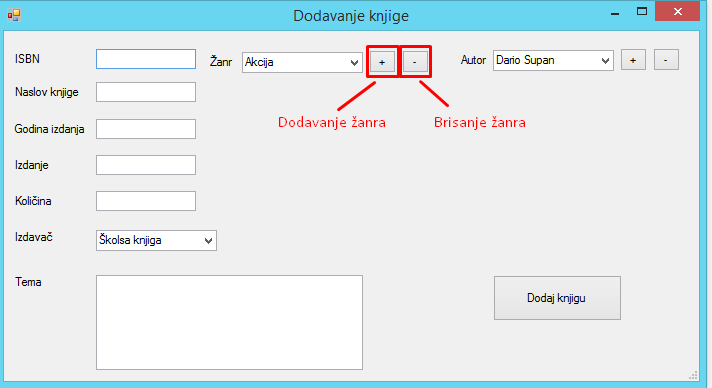

Korisnici
Napomena: STRANICI MOŽE PRISTUPITI SAMO ADMINISTRATOR APLIKACIJE !
Odabirom Korisnici sa glavnog izbornika otvara se prozor kojim upravljamo svim korisnicima u sustavu.
Postoje 3 opcije:
- Uredi korisnika
-> uređuje se onaj korisnik koji je trenutno odabran unutar DataGridView-a
- Obriši korisnika
-> briše se onaj korisnik koji je trenutno odabran unutar DataGridView-a
- Dodaj korisnika
Knjige
Odabirom
Knjige pojavljuju se 2 opcije:
- Pregled knjiga
- Pregled posudbi - stranica samo za administratora
Pregled knjiga
U gornjem dijelu prozora nalazi se popis svih knjiga koje se trenutno nalaze u knjižnici kao i informacije o njima.
Iznad popisa knjiga nalazi se filter pomoću kojega možemo pretraživati knjige po nazivu.
U doljnjem dijelu prozora nalazi se prostor za komentiranje. Svaki korisnik može komentirati i pregledavati ostale komentare.
Pregled posudbi
Forma za popunjavanje knjiga zahtijeva popunjavanje svih polja.
Moguće je dodati do 5 autora po knjizi kao i 5 žanrova.
Minimalno po knjizi se mora dodati po 1 žanr i 1 autor. Ukoliko se želi
dodati više žanrova ili autora to se može učiniti odabirom gumba
+, odnosno
ukoliko želimo obrisati autora ili žanr to se može odabirom gumba
-. Isto je prikazano na slici ispod.

Posudbe
Napomena: STRANICI MOŽE PRISTUPITI SAMO ADMINISTRATOR APLIKACIJE !
Odabirom
Posudbe pojavljuju se 2 opcije:
- Pregled posudbi
- Dodaj posudbu
Pregled posudbi
Na prozoru
Pregled posudbi prikazane su sve trenutne posudbe. Moguće je pretraživati posudbe
po imenu korisnika, a knjigu vraćamo i poništavamo posudbu na način da odaberemo knjigu koju želimo vratiti
unutar DataGridView-a i odaberemo
Vrati knjigu.
Dodaj posudbu
Administrator aplikacije može dodati novu posudbu. Nakon odabira otvara mu se prozor kao na slici iznad.
Odabire knjigu koju korisnik želi posuditi kao i samog korisnika, a može i odabrati želi li izdati knjigu
na 15 dana ili 30 dana.
Postavke
Napomena: STRANICI MOŽE PRISTUPITI SAMO ADMINISTRATOR APLIKACIJE !
Ovdje administrator upravlja aplikacijom u tri odvojene grupe.
- Upravljanje žanrovima
- Upravljanje autorima
- Upravljanje izdavačima
Odabirom bilo koje opcije administrator ima mogućnosti dodavanja i brisanja odabranog.